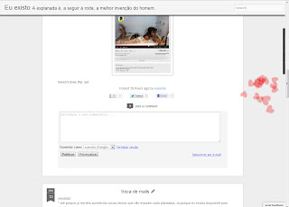

Feb 14  faz favor dar duplo clique no blog e ver se faz o fogo de artifício dos corações cmali na imagem Posted 14th February 2013 by euexisto Carla 14th February 2013, 10:36 humpf x 2 euexisto 14th February 2013, 10:33 antes prisão do que de ventre.tu é que sabes se fazes bem ou mal. da dum tss Carla 14th February 2013, 10:31 Pode, mas isso pode dar prisão...I do - I mean, I do mean. :/ euexisto 14th February 2013, 10:16 manchado de vermelho pode ser de sangue. muahahaopá, eu não enfeito ninguém. if u know what i mean Carla 14th February 2013, 10:14 Se me enfeitas o estaminé de coraçõezinhos esvoaçantes, vou buscar a espingarda do meu pai e estoiro-tos todos! Um blogue tão agradável a ser assim manchado de vermelho. Só pode ser se forem papoilas. euexisto 14th February 2013, 09:52 eu juro que deu. dei duplo clique e começou a rebentar coisos. tenho testemunhas Carla 14th February 2013, 09:50 É muito lindo gozares com as pessoas. É, é!!Que cena tão fatela, explosões de corações... euexisto 14th February 2013, 09:46 got u! ahahahahtou a gozar, deu mesmo, só que agora já não consigo outra vez Carla 14th February 2013, 09:42 Não vejo nada e já cliquei em todo o lado. ← voltar ao arquivo
{kind=link}
humpf x 2
tu é que sabes se fazes bem ou mal. da dum tss
I do - I mean, I do mean. :/
opá, eu não enfeito ninguém. if u know what i mean
Se me enfeitas o estaminé de coraçõezinhos esvoaçantes, vou buscar a espingarda do meu pai e estoiro-tos todos! Um blogue tão agradável a ser assim manchado de vermelho. Só pode ser se forem papoilas.
eu juro que deu. dei duplo clique e começou a rebentar coisos. tenho testemunhas
Que cena tão fatela, explosões de corações...
tou a gozar, deu mesmo, só que agora já não consigo outra vez
Não vejo nada e já cliquei em todo o lado.